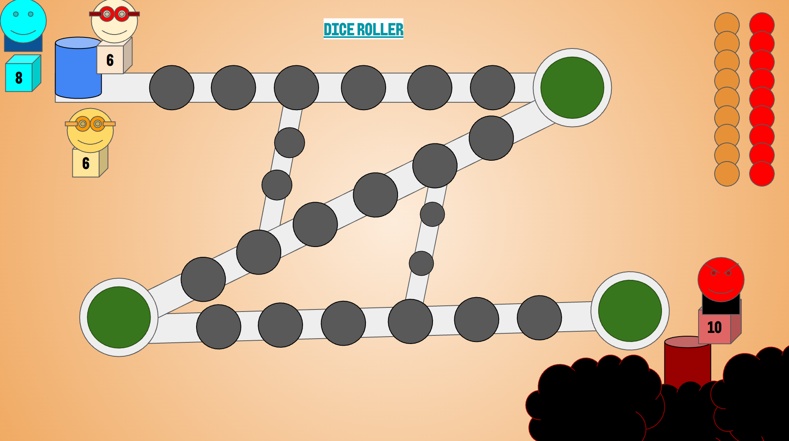
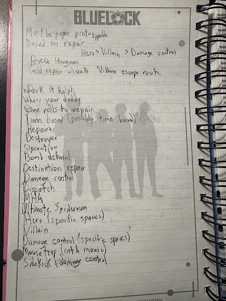

- Goal: Create a paper prototype based on the word "Repair"
- Make the rules and world of the game easily tranlateable onto paper
- Designed the game to be playable with 3-4 players
- Made the story of the game a uniqe spin on the superhero genre.
The game that our team created is called Damage Control! It takes place in a superhero world where the hero has to catch the villain. The game is played in rounds, and the game requires 3-4 players, with all three having different roles: the villain, the hero, and the sidekick. Each role has different mechanics and goals. After each round, the roles switch, and whoever has the most points after a certain number of rounds wins. The villain starts off on the opposite side of the board, and they get to move first. The villain gets the highest possible rolls, with a 10-sided die. Whenever they land on a spot, a red chip is placed down to show that destruction took place at the site. The more damage they cause, the more points they gain. The game ends once the villain decides to retreat or they are caught. The villain can only retreat once they have touched all three green spaces. Retreating allows the villain to keep all of their points, while getting caught by the hero causes them to lose 5 points. Their goal is to cause as much destruction before retreating or getting caught. The hero gets and 8 sided dice to move around. Their main goal is to land on the same spot as the villain, thus ending the round. The hero tries to catch the villain as fast as possible with the minimum amount of damage on the board. Finally is the sidekick, where the repair role comes in. They get the smallest rolls with a 6-sided die. They are trying to repair the destroyed buildings. When the sidekick lands on a destroyed building, they place an orange chip on the spot, nullifying the villain's points. The goal of the sidekick is to fix as many buildings as possible, while avoiding being destroyed by the villain.

The prompt that we were given to design this prototype was one word: Repair. This provided many avenues for us to take when brainstorming and designing. My role, as all of the other members of my group, was to brainstorm ideas and use those ideas to design a paper prototype. While brainstorming and designing, we ran into a few challenges. One design challenge was visualizing how we wanted the board to look. We thought about multiple designs, but eventually took inspiration from Mario Party and used a board design that allows you to take multiple paths. Another part that we struggled to implement was how the turn system would work and how the game would end. We originally thought about a time-based system, where players would move whenever they wanted, leading to chaotic gameplay, but due to logistics, we ended up with a turn-based system. We felt there were not many constraints that we had to work around. The idea naturally worked around the prompt we were given. The constraint of the prototype needing to be creatable on paper required us to ground our ideas and not introduce crazy mechanics.
Our process for brainstorming went smoothly. We first discussed various ways the prompt could be taken. We had a few ideas at first, like reverse hangman and an operation-style game. We eventually decided on a damage vs repair style of game, where one player breaks things, and the other fixes them. We then discussed various forms of inspiration that we could use, like Wreck-It Ralph and Who’s Your Daddy, eventually landing on the superhero aesthetic. We then dove into the aesthetic more, taking more inspiration from media like Dispatch and MHA to further develop the idea of the different characters in the game. We finally ended up on Damage Control and finished developing it into a paper prototype. In retrospect, it was very difficult to come up with ideas due to the broadness of the term. But as we further developed our idea and landed on an idea that we were passionate about, it became easier to come up with ideas for our paper prototype.

Choosing our main idea was relatively simple, as it was the idea that the whole team was passionate about. The team felt that the damage control idea was an interesting take on the superhero genre and that it felt expansive. Our team decided to prioritize ideas that the team could attach an interesting story to. We felt that Damage Control could be easily iterated on.
When I conducted a playtest, there were a few pieces of advice that stood out to me. For one, the person playing villain felt the character moved too slowly, and it was much easier for the hero to catch up in practice. While the villain could get further away if he got bigger rolls, chances are he didn't, and the hero would catch him much faster. This stood out to me because I felt there was a simple solution.I think the dice should be changed to two 6-sided dice for the villain, similar to how Bowser was designed in Mario Party 10. Another piece of feedback that we got was about the board. My playtesters felt that the board was too small and that it needed more branching pathways to keep gameplay more interesting. I felt that this was an important piece of feedback because of the importance of the city within the story. The game is all about damage and repair, and giving more room for the players to do that makes the game feel more expansive and also leads to more interesting interactions with the branching paths. Overall, playtesting went very well
If I were able to iterate on one aspect of the game, I would create a much bigger board with multiple pathways. This would make the experience more immersive, as it would make it feel like you are walking around a city with many different avenues to take. This addresses the comments I got from the playtest, saying that the board felt too small and linear. To fix this, I would change the board to have the outline of a cube, with a green space in each corner. This incentivises the villain to visit every part of the map. Inside the cube, there will be multiple branching paths, allowing players to get from one side of the map to another without taking as many spaces. This also ensures that the villain can just run away from the heroes. I feel that this change to the board can create much more interesting board states and allow for much more strategic pathing. This would make rounds much more interesting.